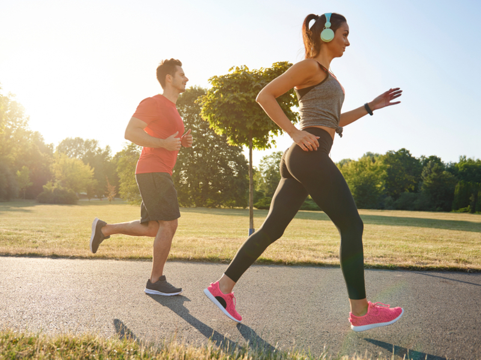

RECEITAS
Frango com brócolis e cenoura
Ingredientes
1 kg de peito de frango cortado em cubos
3 dentes de alho descascados e amassados
Suco de 1 limão
3 colheres de sopa de azeite
2 xícaras de chá de água
1 cebola descascada e cortada em rodelas
Floretes de 1 maço de brócolis
1 cenoura descascada e cortada em cubos. Sal a gosto
Omelete de espinafre
Ingredientes
3 ovos
Leite desnatado
Pó de proteína sem sabor
Pimenta e sal a gosto
Azeite de oliva
Espinafre
ATIVIDADES FÍSICAS
Praticar exercícios físicos regularmente é fundamental para uma vida saudável. Além de fortalecer os músculos e melhorar o condicionamento físico, a atividade física ajuda a reduzir o estresse, melhora a qualidade do sono e aumenta a disposição para as tarefas do dia a dia. Siga abaixo dicas de exercícios práticos.
PILATES
O Pilates é uma atividade física que fortalece o corpo, melhora a flexibilidade e relaxa a mente. Ideal para todas as idades, ele ajuda a corrigir a postura, reduzir o estresse e prevenir lesões. A prática foca no fortalecimento do core (abdômen, lombar e quadril) e promove maior equilíbrio e consciência corporal.
Se você busca um exercício que combine saúde física e mental, o Pilates é uma ótima escolha. Experimente incluir essa prática na sua rotina e sinta os benefícios!

CAMINHADA
A caminhada é uma atividade simples, acessível e cheia de benefícios. Além de melhorar o condicionamento físico, ela fortalece o coração, ajuda no controle do peso e reduz o estresse. Caminhar regularmente também melhora a disposição e a qualidade do sono.
Não precisa de muito: um par de tênis confortável e 30 minutos por dia já são suficientes para sentir a diferença. Que tal começar hoje mesmo? Seu corpo e mente vão agradecer!
